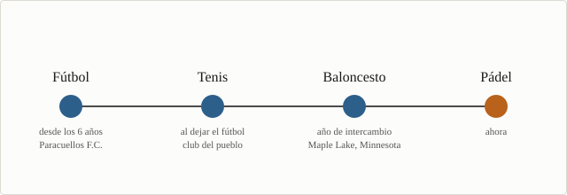

Sobre mí

Me llamo Alejandro, tengo 18 años y estudio en
CUNEF.
Llevo haciendo deporte desde
pequeño y he pasado por cuatro: fútbol, tenis, baloncesto y pádel. En esta página
cuento un poco de cada uno y el partido que mejor recuerdo.
Si me preguntas qué he sacado de todos estos años, te diría que lo que más cuenta es
no faltar a los entrenamientos. Los mejores compañeros que he tenido no eran los que
mejor jugaban, eran los que siempre estaban.
Deportes que he practicado
Estos son los cuatro, por orden:
- Fútbol
- Tenis
- Baloncesto
- Pádel
Fútbol
Fue mi primer deporte y el que más me duró. Me apuntaron con seis años en el
Paracuellos F.C., que es el club de mi pueblo, y estuve unas siete temporadas, hasta
segundo de la ESO. Jugaba arriba, de delantero o de extremo. Me gustaba más el
extremo, porque puedes encarar y correr en vez de estar esperando el balón.
Tenis
Cuando dejé el fútbol me metí a tenis, en el club que tengo al lado de casa. El
cambio fue raro: en el tenis estás tú solo, no hay nadie a quien pasarle la bola
cuando te va mal. Empecé a competir, pero lo dejé porque me iba un año a Estados
Unidos.
Baloncesto
A este llegué de casualidad. Hace dos años me fui de intercambio a Estados Unidos, a
un colegio de
Maple Lake, un pueblo pequeño de Minnesota. Allí los deportes
van por temporadas de tres o cuatro meses en vez de durar todo el año, y la de
baloncesto es en invierno. Me apunté al equipo del colegio sin haber jugado nunca.
Entrenábamos todos los días después de clase. Los partidos no se parecían en nada a
lo de aquí: se juega en el polideportivo del colegio, con la banda de música tocando
en las gradas y un montón de gente del pueblo viéndolo. Yo estaba en el
junior varsity, que viene a ser el equipo B.
Pádel
Es lo que juego ahora, desde que volví de Estados Unidos. Después del tenis se
agradece volver a tener a alguien al lado. La pista es más pequeña y se puede jugar
con la pared, así que al principio le pegas fuerte a todo y no te sirve de nada.